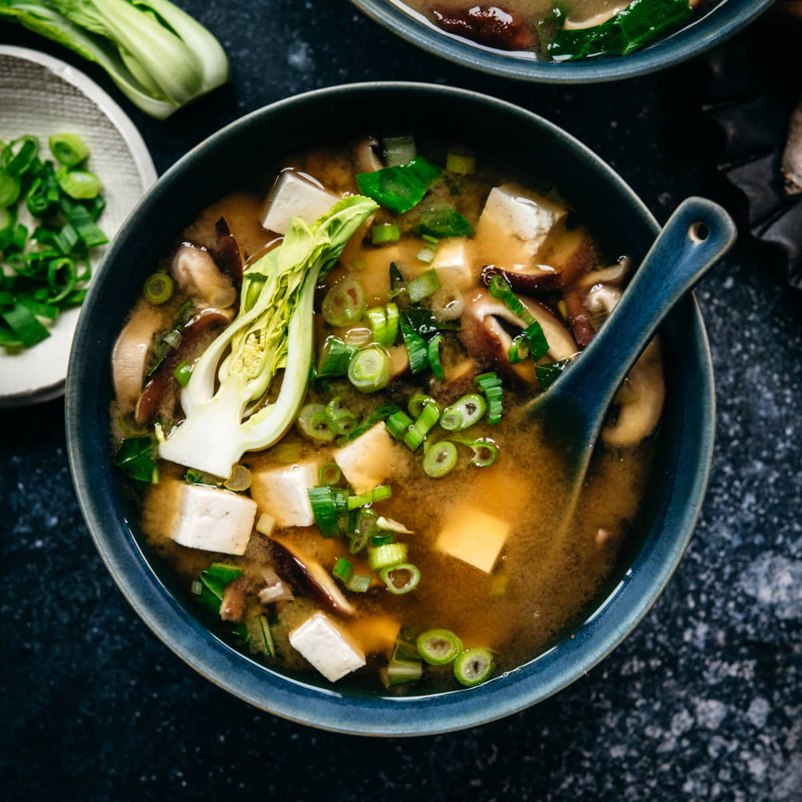

Miso Soup

Description
Miso soup is a traditional Japanese soup made primarily of miso paste,
dashi (broth), and additional ingredients such as vegetables, seaweed, and
tofu.
Ingredients
- 1 packet of Dashi (broth)
- 4 cups of water
- 1/4 cup of Seaweed
- 2 Green Onions, sliced diagonally
- 1 Carrot
- Half package Tofu
- 1/4 teaspoon Onion Powder
- 1/4 teaspoon Garlic Powder
- 1/4 teaspoon Truffle Powder
- 3 tablespoons Red Miso Paste
Directions
-
In a medium saucepan over medium-high heat, combine dashi granules and
water; bring to a boil. Reduce heat to a simmer, and add carrot,
seaweed, green onions, onion powder, garlic powder, truffle powder,
and tofu. Whisk in the miso paste. Simmer gently for 2 to 3 minutes
before serving.